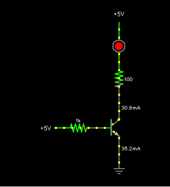

Transistor as amp
- Tutorial to make a classAB amp with 2 transistors by Hackaweek
- Very good tutorial on amp with 2 transistors http://www.electronics-tutorials.ws/amplifier/amp_1.html
- Top is page 6 with the class B or AB amp explanation : http://www.electronics-tutorials.ws/amplifier/amp_6.html
Transistor as switch
 200 of circuits based on transistor ! OMG so great ! Thanks a lot !! http://talkingelectronics.com/projects/200TrCcts/200TrCcts.html
200 of circuits based on transistor ! OMG so great ! Thanks a lot !! http://talkingelectronics.com/projects/200TrCcts/200TrCcts.html- A well explained reference : http://www.sqlskills.com/blogs/paulselec/post/Arduino-figuring-out-transistors-and-associated-resistors.aspx
- Another very good explanation http://www.ermicro.com/blog/?p=423
- http://itp.nyu.edu/physcomp/Tutorials/HighCurrentLoads
- Sample schema for multiple leds http://www.arduino.cc/playground/uploads/Learning/multiple_leds2.jpg
- Monostable, astable explanation and schemas
{kind=link}

Transistor based logic
Howto make basic logic gates with transistors :